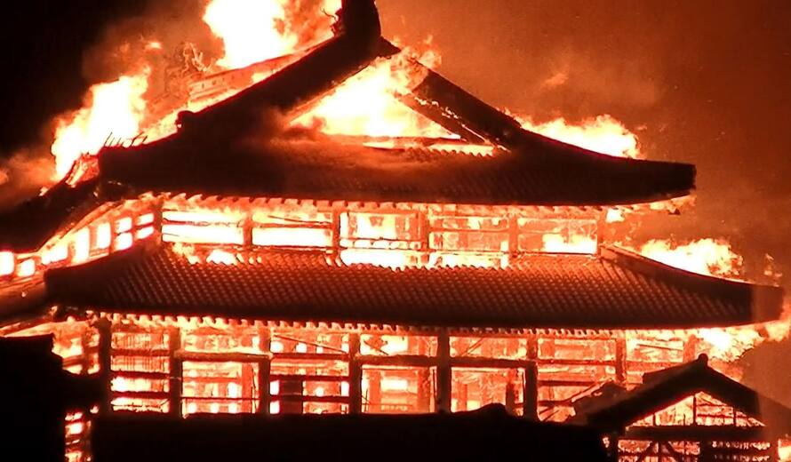

Violents incendies au Japon
Depuis plusieurs semaines, de violents incendies de forêt ravagent le nord-est du Japon, notamment la ville d’Ofunato.
La ville avait déjà été détruite par un grand tremblement de terre et le grand tsunami qui avait suivi en 2011. Avec cet incendie, plus de 2 900 hectares de forêts et de maisons ont brûlé, forçant 1 200 habitants à fuir.
Des feux incontrolables
Tout a commencé le 19 février avec un premier incendie, maîtrisé après avoir détruit 400 hectares de forêt. Mais un second, puis un troisième, beaucoup plus puissants, se sont déclenchés le 26 février et se sont rapidement propagés à cause de la sécheresse extrême. En février, il n’est tombé que 2,5 mm de pluie dans la région, au lieu des 41 mm habituels.
La région très escarpée ne favorise pas l’intervention des pompiers. De nombreuses routes ont été fermées. Le retour de la pluie le 5mars a ralenti la progression des flammes, mais les autorités restent en alerte. Le sinistre, le pire depuis plus de trente ans, a fait un mort et détruit bien des maisons.
Une intervention massive
Face à l’urgence, le gouvernement a envoyé 2 000 pompiers et 16 hélicoptères pour tenter d’éteindre les flammes. Malgré leurs efforts, 80 maisons ont été détruites et un habitant a perdu la vie. 1 660 foyers ont été privés d’électricité et 840 n’avaient plus d’eau. Heureusement, la pluie a modéré l’incendie, mais le risque de reprise reste élevé.
Des habitants en détresse
Certains habitants vivent cette catastrophe comme une double peine. Ils avaient perdu leur maison et des membres de leur famille lors de la grande catastrophe de 2011. Ils s’étaient alors installées en montagne pour être en sécurité, mais aujourd’hui, c’est le feu qui les a chassés. Toutefois, les écoles devraient rouvrir prochainement. Les citoyens doivent de nouveau faire face à d’importants dégâts, alors qu’ils s’efforcent toujours de reconstruire leur vie», a regretté le premier ministre japonais, Shigeru Ishiba, qui a placé la zone en état de catastrophe naturelle.
Le climat en cause ?
Des incendies ont aussi été signalés ailleurs au Japon, souvent causés par l’imprudence humaine. Les experts estiment que le changement climatique ne crée pas ces feux, mais qu’il les aggrave. En 2024, la température moyenne du Japon a atteint un record. Avec des étés plus chauds et secs, les grands incendies incontrôlables risquent d’être de plus en plus fréquents. Le Japon doit donc mieux s’y préparer pour protéger ses habitants.
Source : Actuailes.fr